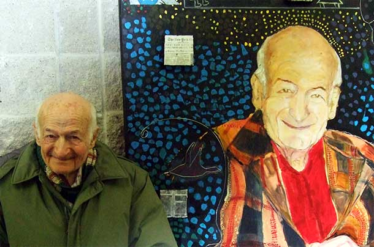
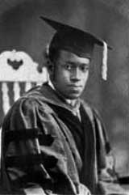
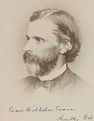
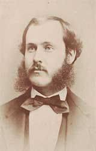
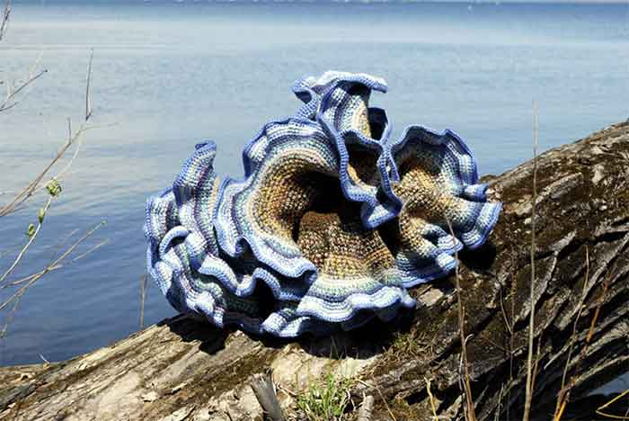

Mathematics at Cornell
The Department of Mathematics is known throughout the world for its distinguished faculty and stimulating mathematical atmosphere. We took a look back to see how we got to where we are.

Fast Facts
- 1868 Cornell entrance requirement in mathematics amounted to "Arithmetic and Algebra including quadratic equations."
- Before World War I, there were approximately 450 mathematics Ph.D.s awarded. Cornell, Columbia and Harvard each awarded about 30 while Yale and the University of Chicago awarded the most, about 50 each.
- Hiram Messenger, B.Litt 1880, Ph.D. 1886 (and a Cornell Trustee) was one of the 16 original charter members of the American Mathematical Society (AMS), created in 1888 (originally called the New York Mathematical Society). Prof. Virgil Snyder also served as the 19th president, 1927-28.
- Since Cornell opened in 1868, about 300 tenure or tenure-track faculty have served the department, about 650 doctorates have been awarded and an estimated 2,500 undergraduates students have majored in mathematics.
- 30 faculty or former faculty have been elected to the American Academy of Arts and Sciences (AAAS) or the National Academy of Sciences
- 7 faculty have held memberships in both AAAS and NAS during their tenure at Cornell – James Oliver first, in 1872; Eugene Dynkin, A.R. Bullis Professor of Mathematics Emeritus, Harry Kesten Ph.D. '58, Goldwin Smith Professor Emeritus, and the late William Thurston most recently.
People
Lee Lorch
World War II broke out just as Lee Lorch finished his Ph.D. in math at the University of Cincinnati, after earning a Bachelors at Cornell, Lee Lorch, like so many American patriots, enlisted in the U.S. Army. But Lorch was disturbed by the unequal treatment of black and white soldiers in the army, so he left the military and took a job as a mathematics professor at City College of New York. Kicking off his long dual career as both a mathematician and civil rights activist, Lorch led a campaign to fight the discriminatory housing practices of Stuyvesant Town, a large new apartment complex which had a strict "no blacks" policy. Lorch's long and public fight with the housing board led to his dismissal from City College and later from Penn State. He then moved south, first working at Fisk, an historically black college, and then at Philander Smith College in Little Rock, Arkansas. Lorch and his family continued to fight racial discrimination and his attempts to enroll his white daughter in the neighboring all-black school led to him being subpoenaed by the House Un-American Activities Committee, despite the fact that Brown vs. Board of Education had recently mandated desegregation of schools. Accusations of communism essentially forced him out of American universities. He moved to the University of Alberta in Canada and then to York in Toronto, where he spent the remainder of his career. He passed away in 2014 at the age of 98.
Harry Kieval, 1936
Harry Kieval is a familiar name at Cornell, as the annual prize for outstanding graduating seniors in mathematics and physics is named after him. Even after his death, his passion for undergraduate education lives on through his generous philanthropy. His estate supports annual lectures in the mathematics and physics departments of Cornell, a lecture series at Humbolt State and a scholarship for Humbolt State mathematics majors. Kieval received his Ph.D. in mathematics from the University of Cincinnati and spent the bulk of his career as Professor of Mathematics at Humbolt State University in Arcata, California.
Paul Wolfowitz, 1965
Perhaps most famous for his tenure as Deputy Secretary of Defense under George W. Bush and his involvement in the Iraq war, Paul Wolfowitz has also served as Under Secretary of Defense under George H.W. Bush and President of the World Bank Group. He is currently a Scholar at the American Enterprise Institute. The son of Cornell Mathematics Professor Jacob Wolfowitz, the younger Wolfowitz double majored in mathematics and chemistry before earning a Ph.D. in Political Science from the University of Chicago and entering politics.
Thyagaraju (Raju) Chelluri, 1999
Raju Chelluri is the namesake of the annual Chelluri Lecture series at Cornell University. After graduating from Cornell, Chelluri pursued graduate studies in mathematics at Rutgers University. He passed away on August 21, 2004, at age 26, just shortly before he was to receive his Ph.D. He completed a thesis, Equidistribution of the Roots of Quadratic Congruences, supervised by H. Iwaniec, and was given a Ph.D. posthumously.
Eugene Dynkin
Born in Leningrad in 1924, Evgenii Borisovich Dynkin, A. R. Bullis Professor Emeritus of Mathematics, suffered greatly under the oppressive Stalinist regime. His family was exiled to Kazakhstan; his father "disappeared." Dynkin called it "almost a miracle" that he was admitted to Moscow University at age 16.
"Every step in my professional career was difficult because the fate of my father, in combination with my Jewish origin, made me permanently undesirable for the party authorities at the university," he said.
His first breakthrough, at the age of twenty, was the use of "simple roots" and "diagrams" to study simple Lie algebras. His work inspired an entire school in Lie groups in Moscow in the 1950s, and these diagrams are now widely known as "Dynkin diagrams" or "Coxeter-Dynkin diagrams."
Dynkin always emphasized (and taught his students) that one of the greatest values in mathematics is its unity, as revealed in the links between its various fields. He saw connections between Lie algebra and probability theory unnoticed by most mathematicians, and worked early on on probability and statistics parallel to his work on algebra. He became one of the most respected world experts in the theory of Markov processes and played a key role in the development of measure valued processes and superdiffusions. He came to Cornell to join one of the most preeminent probability groups in the world.
Life in the USSR became more and more unbearable for Dynkin and eventually he made the difficult decision to emigrate and applied for permission, a great risk for a scientist of his renown. He left behind his students and friends and in 1977 became a professor at Cornell. "I found kind and friendly colleagues, gorgeous scenery of forests, lakes, and waterfalls," he said. "The most exciting was a new feeling of freedom and independence of big and little bosses, something which I never enjoyed in my previous life."
For more than half a century, Dynkin recorded conversations with renowned mathematicians, including many Cornell alumni and faculty, which are now available at the Cornell library: http://dynkincollection.library.cornell.edu/
In recognition of his foundational contributions to two areas of mathematics and his production of outstanding research students in both the U.S. and USSR, he was awarded the Leroy Steele Prize from the American Mathematical Society. He was a also a fellow of the American Academy of Arts and Sciences and a member of the National Academy of Sciences. Eugene Dynkin passed away on November 14 in Ithaca, NY, at the age of 90.
James Edward Oliver
The archetypical absent minded professor, James Edward Oliver was an exceptionally inquisitive and original mind whose actions in support of a better curriculum, graduate education and research allowed Cornell Mathematics to become one of the outstanding mathematics departments in the world. Hired as a professor in 1870, he had a long lasting impact on the department; the weekly colloquium, in continuous operation since 1898, is called the Oliver Club. He supervised the Ph.D. theses of the first six Cornell mathematics graduate students and chaired the department from 1874 to his untimely death in 1895. He was a fellow of the American Academy of Arts and Sciences and a member of the National Academy of Sciences.
Wallie Abraham Hurwitz
Wallie Abraham Hurwitz collected degrees: an A.B. and B.S. in Education and an A.M. from the University of Missouri, a second A.M. from Harvard, and a doctorate from the University of Göttingen in 1910 under the famous David Hilbert. Hired in 1910 by Cornell, Hurwitz stayed until his retirement in 1954 where he was one of the most active thesis advisors of the first half of the twentieth century.
Although he primarily worked in mathematical analysis, Hurwitz contributed broadly to the field of mathematics, publishing in algebra, group theory and mathematical logic. In the 1920's Hurwitz and D. C. Gillespie published one of the first rigorous textbooks on advanced calculus.
Hurwitz was described by a student as a "voracious reader" with a vast collection of science fiction and crime novels. He was an avid violinist, frequented Cornell concerts, and was a member of the Faculty Music Committee and the Ithaca Community Players. His appreciation for Gilbert & Sullivan led him to write humorous lyrics to one of their songs, titled "A Mathematician's Progress."
Harold Calvin Marston Morse
The most important mathematical work done at Cornell between the opening of the university in 1868 and World War II is Marston Morse's "Relations between the Critical Points of a Real Function of n Independent Variables," published in the Transaction of the American mathematical Society in 1925. In this paper, Morse develops the first elements of what would later become known as Morse Theory.
Morse's mathematical work was interrupted by World War I, during which he served with distinction in the American Expeditionary Force. He was awarded the Croix de Guerre with Silver Star for bravery under fire.
After the war, he taught at Cornell from 1920 to 1925 when he moved to Brown and then to Harvard and the Institute of Advanced Study. While at Cornell he published two other important works related to his 1917 Harvard Ph.D. thesis.
- "Recurrent Geodesics on a Surface of Negative Curvature" (1921)
- "A Fundamental Class of Geodesics on any Closed Surface of Genus Greater Than One" (1924)
Firsts
1925Elbert Frank Cox Ph.D. '25 was the first African American at Cornell–and perhaps the first in the world–to receive a Ph.D. in mathematics. He enrolled in Cornell after serving in the US Army in France during World War I. Upon receiving his Ph.D., he taught at West Virginia State College then moved to Howard University, where he served as Chair of the Department of Mathematics from 1957 to 1961. He retired in 1965.
1868First Chair of the Department: Evan Wilhelm Evans, 1867. At the opening in 1868, with an entering class of approximately 400 students, Professor Evans and assistant professor Ziba Potter taught mathematics.
1876First Cornell student with a clear focus on mathematics (since early Cornellians had no explicit majors or fixed curriculum): Charles Ambrose Van Velzer, 1876. Van Velzer went on to supervise the first Mathematics Ph.D. awarded at the University of Wisconsin.
1872First Ph.D. Awarded: Henry Turner Eddy, 1872; Eddy received the first Cornell Ph.D awarded in any subject. He had been an instructor of mathematics at Cornell from 1869-1872. His engineering book on graphical methods was translated into German and called by historian Florian Cajori "the first original work on this subject by an American writer."
Fun Math
Critical Percolation Result by Harry Kesten Ph.D. '58, Goldwin Smith Professor Emeritus
Percolation is a mathematical model based on a physical phenomenon by the same name. In physics and chemistry, percolation refers to the study of a porous or filtering medium, and typically addresses questions about liquid flowing through permeative solids, such as water running through a rock or being pressed through coffee grinds.
The mathematical model of percolation is studied using ideas from probability theory. Randomness, the cornerstone of probability theory, is needed to model the channels through which the water flows, e.g. the tiny holes and paths in the rock or the cracks between the coffee grinds. Such physical spaces are so complicated that they are essentially a random series of channels.
The 9x9 grid shown is the starting point for our exploration of the two-dimensional mathematical model of percolation. Pretend each edge in the grid is a pipe. Some pipes allow water to flow through them; we call these pipes open and will color them red. Pipes which do not allow water to flow will be called closed and colored black. To decide which pipes are open and which are closed, pick a number p between 0 and 1 - this number p corresponds to approximately what fraction of the total pipes are open. To be more specific, we create a weighted coin with one side labeled open and the other labeled closed. When this coin is flipped, it lands on the open side with probability p and lands on the closed side with probability 1-p. For each edge in the model, we flip the coin and determine whether the edge is open or closed based on the outcome of the coin flip.
Let's see two examples. For p = 1/3 there are approximately 48 open pipes and 96 closed pipes and the location of the open pipes is randomly distributed. Connecting this back to the physical phenomenon we are trying to model, in the example of water flowing through a rock, we know approximately how porous the rock is but not the exact location of the holes within the rock.
If I pour water into the center blue vertex, only allowing it to travel along the open red pipes, how far would the water travel? Does it make it to the outside borders of the graph? In the left grid the water gets stuck after traveling through 3 pipes, but in the right grid there are enough open pipes to let water travel all the way to the outside border.
Now we throw our favorite mathematical wrench into the story: infinity. We again repeat the experiment, this time on an infinitely large grid, extending in all directions. The new infinite grid has no borders, so there's no limit on the lengths of the paths. Now we can ask one important and surprisingly confounding question: Is there any infinite path of open pipes? In 1980, Cornell professor Harry Kesten proved that if p is bigger than one half (i.e. at least half the pipes are open) then water will be able to flow infinitely far, but if p is less than one half then the water will stop after a finite distance. This threshold state, p = 1/2 is called the critical probability. Can you spot the difference? (Note: In these pictures, black edges are open and white edges are closed.)
One of the remarkable features of Kesten's result about the two-dimensional grid is that no one has proved what the critical probability constant is for a three-dimensional grid.
Illustrating Non-Euclidean Geometry Using Crochet
The hyperbolic plane, a topic of math professor William Thurston's research, is not describable by an equation. It creates all kinds of unexpected and non-Euclidian possibilities: triangles whose interior angles add up to zero, for example, or parallel lines that diverge.
But it turns out to be possible to illustrate non-Euclidean geometry using crochet, as math professor Daina Taimina has demonstrated. She's exhibited her crocheted 3-dimensional examples of hyperbolic shapes in the United States and Europe. Her 2009 book "Crocheting Adventures with Hyperbolic Planes" received the Euler Book Prize from the Mathematical Association of America.
Women in Mathematics
Cornell University has been co-ed since its founding and the Department of Mathematics is no exception. The fifth, sixth, and seventh Doctorates of Mathematics at Cornell were awarded to women, all of whom studied under J. Oliver. Ida Metcalf Ph.D. 1893 wrote a dissertation on Geometric Duality in Space and spent her career in the office of Controller of New York City. Annie Louise McKinnon Ph.D. 1894 was given a fellowship to study at Göttingen for two years after writing a dissertation on Concomitant Binary Forms in Terms of Roots. Upon her return, she became Professor of Mathematics at Wells College. Agnes Sime Baxter Ph.D. 1895, the second Canadian woman to receive a Ph.D. in mathematics, wrote a dissertation On Abelian Integrals: A Resume of Neumann's "Abelsche Integrale" with Comments and Applications and edited a collection of Oliver's mathematical notes following his death.
Of all American universities, Cornell awarded the second most mathematics Ph.D.s to women prior to 1940, and has continued to educate many women in its graduate program. But despite a century of progress in women's education, a strong gender disparity persists in mathematics, particularly at top-tier research universities. Until 1970 Cornell only had three female faculty members: Helen Brewster Owen (Instructor 1917-22), Christine Williams Ayoub (Instructor ~1950, now Prof. Emerita at Penn State), and Lisl Gaal (Assistant Professor ~1955, now Prof. Emerita at U. Minn.). Birgit Speh was promoted to become the first female Full Professor in 1989, and in 2011 Karen Vogtmann became the first woman to hold an endowed chair position, as Goldwin Smith Professor of Mathematics.
The Ruth I. Michler Memorial Prize empowers women in mathematics and is awarded annually to a mid-career woman who is an Associate Professor or the equivalent. The prize affords her one semester at Cornell without teaching obligations, allowing her to focus on research during a critical time in her career.
Cornell's Association for Women in Mathematics chapter was established in 2011 and hosts a variety of lectures, discussions, and outreach programs throughout the year – including a pie eating contest on March 14 to celebrate Pi Day (on 3/14 at 1:59 pm), always a hit with students and faculty alike.